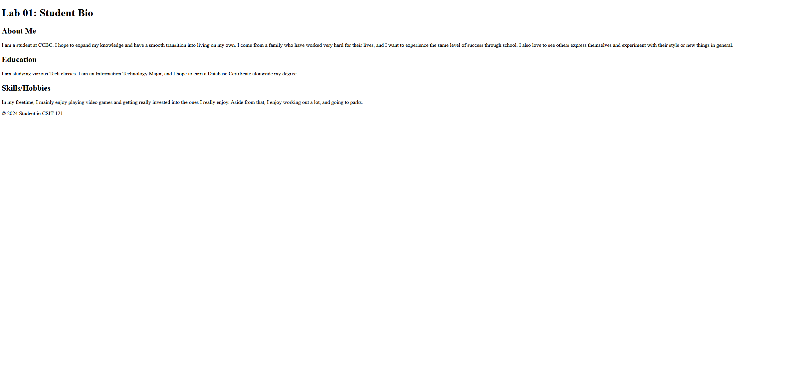

Web Development Foundations
Lab:01 covered Web Developement Foundations and was fairly simple. It was all about practicing simple file management and just getting started with the structure of the course. In this Lab, I simply filled in a premade HTML file with some of my own personal information. It didn't have any sort of styling or advanced web standards like the later Modules would include.
HTML Basics
Lab:02 was all bout the basics of HTML and its structure. In this assignment, rather than filling out something already made for me as in Lab: 01, I had to construct my own page while following the hierarchal structure of HTML. Unfortunately, I didn't do that well and somewhat failed to understand the placement of certain elements, and proper uses of things such as headings. Still, I was able to improve after that Lab and have continued to do so.
CSS Basics
CSS Basics was put to the test in Lab:03, where I revisited the previous Lab and added styling to it. The Module specified the three types of styling used (inline, internal, external), but for the purpose of this assignment I was instructed to use an external CSS file, to get the hang of that method. This is because most websites contain multiple pages, and it's generally better practice to reference an external stylesheet rather than changing the style ruleset for every single page. I applied some simple (and questionable) styling to Lab:02 and finished the assignment.